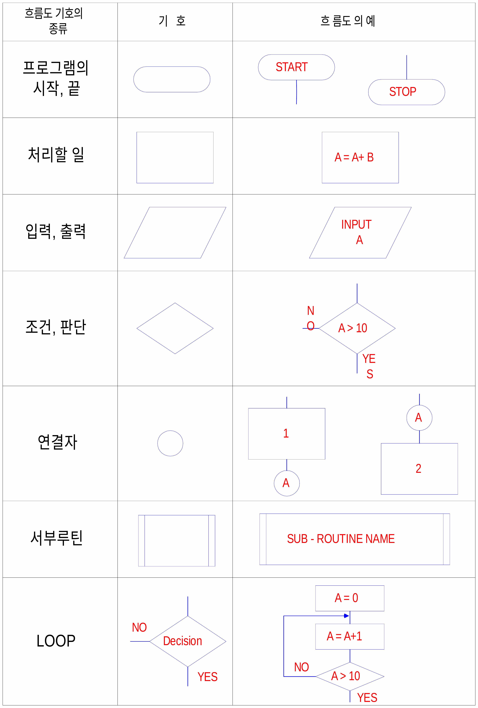
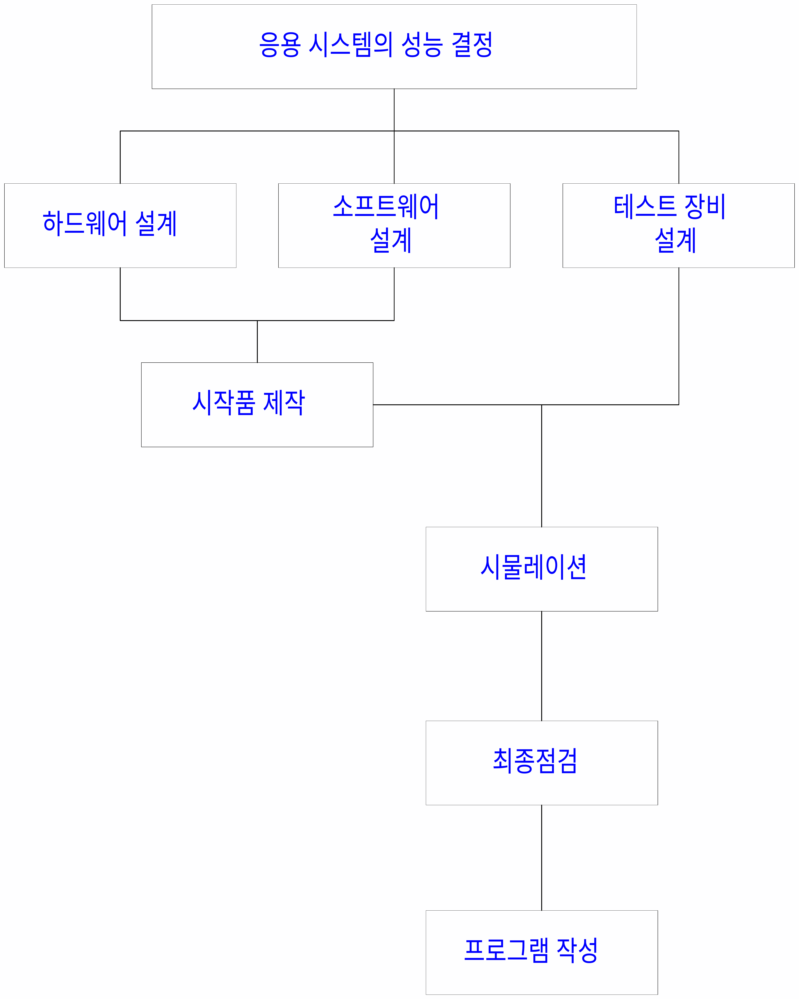
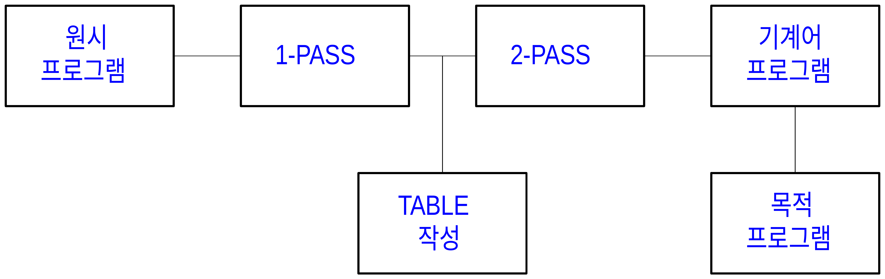

00Z80 어셈블리의 개론
1. Z80 어셈블리의 작성 및 코딩
가. 내용
(1) 어셈블리 프로그램을 작성하여 Z80 마이크로프로세서를 동작시키기 위해서는 일련의 논리적인 동작 순서에 의해서 프로그램의 순서를 정하여야 한다.

(2) Z80 마이크로프로세서에 작업 순서를 바르게 지시하기 위해서 흐름도(Flow-Chart)를 이용하여 일의 순서를 미리 설계한 후에 그에 따른 어셈블리 언어를 코딩하여 시스템에 입력해야 한다. 그림 3-3에 일정한 프로그램의 흐름을 나타내기 위한 표준화된 흐름도 기호를 나타내었다.
(3) 또한, 실제로 하드웨어를 개발하고 프로그램을 작성할 때 개발용 장비(MDS, Micro-computer Development System)등을 이용하여 시작품(Prototype system)을 시뮬레이션 하여 정상 동작이 수행되는지를 판단한 후에 프로그램을 작성한다.
(4) 이같은 방법으로 어셈블리 프로그램을 작성한 후에 Z80 마이크로프로세서를 동작시키기 위해 기억장치에 저장할 경우 코딩 양식을 이용하거나 편집기(EDITOR)등을 이용하여 프로그램을 기재하여야 한다.
(5) 어셈블리 프로그램 작성시에 코딩 양식은 어셈블리 명령어의 명령어부와 번지부 등을 구분하기 위해서 필요한 형식이다. 프로그램의 1 명령 Line 즉, 1 문장(Statement)은 메모리 번지를 기호화한 Label 부분과 명령어부, 번지부 그리고 주석 부로 구성된다.
(6) Label 부분은 일종의 기호 어드레스로서 메모리상의 실제 번지를 표시하며 JUMP 명령 등 프로그램의 흐름을 제어하는 명령을 수행할 때 상대 번지의 위치를 알기 쉽게 한다.
(7) 다음은 Z80 어셈블리 프로그램의 각 명령문(Statement)의 구성을 알아보기 위하여 간단한 가상의 프로그램을 작성한 예이다. 제시한 프로그램 예에서는 AAA와 BBB의 2가지 LOOP가 구성되어 있으며 또한 JUMP의 조건이 성립하면 해당되는 번지로 분기한다.
AAA :
LD HL, 10H
BBB :
DEC L
JR NZ, BBB
DEC H
JR Z, AAA
(8) 어셈블리 프로그램에서 사용된 Label은 자동적으로 실제 번지로 계산되고 해당되는 번지를 가진 목적 프로그램을 만들어 준다.
(9) 프로그램 작성시 Label은 영문자로 시작되는 8자 이내의 영문자와 숫자로 지정해야 한다. 단, 어셈불리 명령어나 어셈블러 예약어와 철자가 같지 않도록 주의하여야 한다.
(10) 명령어부, 즉 OP code부는 기계어 명령어를 표시하는 부분이며 CPU가 수행하여야 할 일을 표시한다. OP Code에는 Z80 어셈블리 명령어와 어셈블러의 동작을 제어하기 의사 명령어(Pseudo-Inetruction)가 있다.
(11) 번지부, 즉 Operand부는 명령이나 동작 수행상 필요한 데이터, 번지, 레지스터의 종류 등을 표시하는 부분이다. 형식상으로는 OP Code 다음에 위치하고 있으며 하나 이상의 공백을 써서 OP Code와 Operand를 구분하게 된다. Operand는 명령 형식에 따라 여러 종류가 있으며 Operand가 2개 이상일 경우에는 쉼표(.)를 이용하여 구분한다.

그림 4-2 응용 시스템 설계에 따른 프로그램 설계 과정
(12) 마지막으로 세미콜론으로 분리되는 주석(COMMENT) 부분이 위치하며 작성된 프로그램을 이해하기 쉽고 타인이 보아서 어떤 동작인지 알 수 있도록 문서화 하는데 필요한 설명 부분이다. 주석 부분은 어셈블러에 의해서 기계어로 변역되지 않고 무시되므로 프로그램의 동작에는 영향을 미치지 않는다.
2. Z80 어셈블러의 동작
어셈블리 명령어로 작성된 프로그램은 인간이 이해하고 작성하기 쉬우며 또한 오류가 발생했을 때에도 발견하기 쉽고 debugging 하기 쉬운 연상 언어(Symbolic Language)로 구성되어 있으므로 실제로 Z80 CPU가 읽고 해독할 수가 없다. 따라서 Z80 CPU가 이해할 수 있는 2진수로 구성된 기계어로 번역해야 하며 프로그램의 실행 순서도 프로그램 작성 순서와 다를 수 있으므로(Sub-Routine 동작 또는 각종 분기 명령 등의 수행시 실행 순서가 변경되므로) 번지수도 변경해야 한다. 그리고 일반적인 프로그램 작성자는 0번부터 순서적으로 프로그램을 작성하나, 실제 CPU의 실행 번지는 다를 수도 있으므로 실제 번지로 재배치해야 한다.
이와 같은 동작을 수행할 수 있도록 프로그램을 내부 메모리상의 실제 번지로 재배치 하여 기계어로 번역하는 소프트웨어가 필요하며 이것을 어셈블러라 한다.
어셈블러는 그 형태에 따라서 다음과 같은 여러 종류가 있다.
가. 크로스 어셈블러(Cross Assembler)
어셈블리 연상 언어로 작성된 프로그램을 컴퓨터가 이해할 수 있는 기계어로 변환할 때 Z80 CPU로 만들어진 컴퓨터가 아니라 다른 기종의 컴퓨터에서 번역되어 목적 프로그램(Object Program)이 만들어진다면 이때 사용되는 어셈블러를 크로스 어셈블러라고 한다. 크로스 어셈블러를 사용한다면 메모리 용량이 큰 시스템에서 사용하므로 여러 가지 다양한 기능을 가질 수 있으며 어셈블리 프로그램을 빠르게 작성하고 처리할 수 있다는 장점이 있다.
나. 매크로 어셈블러(Macro Assembler)
기본적으로 어셈블리 프로그램으로 작성된 연상 언어를 컴퓨터가 이해할 수 있는 기계어로 번역할 뿐만 아니라 별도로 매크로라는 편리한 기능을 가지고 있는 어셈블러이다.
매크로 기능은 하나의 프로그램 내에서 같은 동작의 프로그램을 여러 번 반복수 행할 경우 매 동작시마다 같은 프로그램을 반복해서 작성해 주어야 하는 불편함을 없애고 한번 작성해 매크로 처리하여 필요할 경우마다 마치 서브루틴(Sub-Routine)을 사용하는 것과 같은 방법으로 프로그램을 작성할 수 있으므로 편리하다. 또한 간단한 프로그램은 한번 작성하여 매크로 처리하여 라이브러리에 저장해 놓고 후에 만일 같은 프로그램을 또 작성할 필요가 있을 때 사용할 수 있다. 같은 방법으로 만일 타인이 작성할 프로그램을 사용할 필요가 있을 때도 쉽게 사용할 수 있다.
다. 2-PASS 어셈블러
작성한 어셈블리 프로그램을 어셈블러를 이용하여 기계어로 번역할 경우 주 프로그램의 분기 번지를 미리 알아야 하며 주 프로그램에서 사용한 Label의 번지와 주 프로그램에서 사용한 Symbol 번지, Symbol 변수의 메모리상의 위치 등을 미리 알아야 한다.
그러나 컴퓨터는 이러한 번지수를 미리 알 수 없으므로 어셈블러에서 2번 읽어 줌으로써 번지를 알아본 후에 기계어로 번역하는 방법이다.
먼저 1PASS 과정에서 Program Counter의 내용을 0번지에서부터 프로그램의 끝까지 한번 읽어보고 Label 번지, Symbol 번지, Symbol 변수의 메모리상의 위치 등을 Table로 작성한다. 그 다음에 2 PASS 과정에서 Table을 참조 헤서 변환된 번지에 따라서 기계어로 번역한다. 이런 과정은 다음의 순서로 진행된다.

3. Z80 어셈블리의 작성
가. 레지스터의 종류
범용 레지스터(general purpose register) | 특수 레지스터 (special register) | ||||
주 레지스터(main register) | 보조 레지스터(auxiliary reg) | I(interrupt vector) | R(memory refresh) | ||
A | F | A' | F' | IX | |
B | C | B' | C' | IY | |
D | E | D' | E' | SP | |
H | F | H' | F' | PC | |
Z80을 포함한 각종 컴퓨터에서 데이터의 연산, 이동 및 기억하는데 일시적으로 필요한 임시 기억장치를 레지스터라고 한다. 8[bit]일 경우에는 8개, 16[bit]일 경우에는 16개의 플립플롭(FLIP-FLOP)으로 구성되어 있으며 개개의 플립플롭은 "1"또는 "0"의 1[bit] 기억 용량을 가진다. 이때 1개를 레지스터의 기억 용량을 레지스터 길이라고 하며 자리수를 이동시키는 레지스터를 시프트 레지스터, 어드레스지정 또는 연산 등의 목적으로 사용되는 레지스터를 범용 레지스터라고 한다.
레지스터의 각 BIT는 SET와RESET의 2개로 입력되어 어떤 2진수를 출력하고 있으며 만일 SET에 입력 "1"이 입력되어 있으면 RESET에 "1"이 입력될 때까지 2진수 "1"의 출력 상태를 유지하고 있는 기능이 있다.
Z80 CPU의 레지스터는 휘발성 내부 메모리인 RAM으로 구성되어 있으며 Z80 CPU 내부 통제부의 명령에 따라서 레지스터의 내용을 메모리 어드레스 버퍼 또는 메모리 데이터 버퍼에 출력시키는 기능을 가지고 있으므로 메모리 어드레스 레지스터(Memory Address Register, MAR) 또는 메모리 데이터 레지스터(Memory Data Register, MDR)라고 말한다. 그리고 메모리나 외부 I/O 단자로부터 읽어들인 데이터는 레지스터에 기록되어 임시 저장하거나 데이터의 연산이 필요한 경우 레지스터에 기억된 내용이 내부버스에 의하여 ALU로 이동되어 연산되고 연산 결과를 다시 레지스터에 기억하는데, 누산기(ACCUMLATOR) 및 범용 레지스터가 사용된다. 제시한 그림 3-5는 I8080을 개선한 Z80 레지스터의 구성을 나타낸 것이다.
일반적으로 Z80 CPU의 레지스터는 레지스터의 기능 및 길이를 확장하기 위하여 2조의 범용 레지스터와 누산기(ACCUMLATOR) 및 플래그 레지스터 그리고 1조의 특수 레지스터로 구성되어 있으며 2조의 레지스터는 따로 사용되어 8[bit]로 쓰거나 함께 사용되어 16[bit]로 쓸 수 있다.
(1) 누산기 (ACCUMULATOR, A)
Z80 CPU의 레지스터 중에서 가장 많이 사용하는 레지스터이며 메모리에 기억 시키거나 메모리 또는 I/O와의 데이터 이동 등 범용 레지스터의 목적으로도 많이 사용되므로 범용 레지스터의 일부로 분류할 수도 있으나, 누산기는 본래 가산, 감산 등의 산술연산이나 AND, OR, EXCLUSIVE-OR 등의 논리연산을 수행하는데 주목적이 있다. 따라서 다른 목적이므로 사용될 때는 일반 범용 레지스터와 같지만, 연산용으로 사용하는 것이 주목적이므로 연산용으로 사용될 때는 명령어도 간단해지고 훨씬 빠른 속도로 수행할 수있다. A' 레지스터와 쌍으로 만들어 8[bit] 및16[bit]로 사용 가능하다.
(2) 플래그(FLAG)레지스터 F
주로 산술 및 논리연산을 수행한 후에 연산 결과에 따른 조건의 변화와 데이터의 이동을 수행한 후에 조건의 변화를 기억하는 레지스터로 조건부 분기 명령을 수행할 때 플래그 레지스터의 해당 BIT를 검색한 후에 JUMP 동작을 수행하게 된다. F' 레지스터와 쌍으로 만들어 8[bit] 및 16[bit]로 사용 가능하다.
(3) 범용 레지스터 B, C, D, E, H, L
범용 레지스터는 데이터의 연산, 이동, 기준 어드레스 설정 등 여러 가지 목적으로 사용이 가능하다. B와C 레지스터, D와E 레지스터, H와L 레지스터를 쌍으로 만들어서 16[bit]로 사용할 수도 있다.
(4) 인터럽트 레지스터 I
Z80 프로그램에서 인터럽트를 수헹할 때 인터럽트 벡터의 하위 8[bit]는 프로그램 중에서 지정하고 인터럽트 벡터의 상위 8[bit]를 인터럽트 레지스터에 기억시켜 줌으로써 이 2가지를 합쳐서 실제 인터럽트 벡터 어드레스를 구성하게 되고 인터럽트 벡터 테이블에서 해당 어드레스를 얻어 어드레스 위치로 분기할 수 있게 된다.
(5) 리플래시(Reflash) 레지스터 R
Z80 Dynamic RAM을 유지하기 위하여 매 2[mSec]마다 리플레시 해 주어야하는데, 리플레시 주기마다 리플레시 레지스터의 하위 7[bit] 내용을 메모리 어드레스 버스의 하위8[bit]에 출력하여 리플레시 어드레스를 지정하게된다.
(6)인덱스(INDEX) 레지스터 IX, IY
Z80에는 2개의 16[bit] 인덱스 레지스터를 가지고 있으므로 기준 어드레스를 설정할 수 있으며 메모리를 읽고 쓸 수 있는 기준 어드레스의 기능을 가지고 있다. 또한 고정된 기준 어드레스에 어드레스 변위의 수를 더해줌으로써 127에서부터- 128까지의 범위 내에서 메모리 블록의 데이터를 이동시킬 수 있다.
(7) 스택 포인터(Stack Pointer) 레지스터 SP
Z80의 스택은 일종의 메모리 어드레스 임시 기억장소로 어드레스의 저장 창고와 같은 동작을 하고 있다. 동작방법은 LIFO(Last Input First Output방법으로 먼저 저장된 데이터가 가장 나중에 출력되고 나중에 입력된 데이터가 가장 먼저 출력되는 형식으로 사용된다. 주로 레지스터의 내용을 일시적으로 메모리에 저장하거나 서브루틴 호출시에 다시 복귀할 주 프로그램의 어드레스를 저장할 용도로 사용되며 또 인터럽트 발생시 복귀할 주 프로그램의 어드레스를 저장할 때도 사용된다.
(8) 프로그램 카운터(Program Counter)레지스터 PC
Z80에서 프로그램 카운터 레지스터는 현재 수행하고 있는 어떤 프로그램의 명령이 끝난 후 다음에 수행될 명령의 어드레스를 기억하고 있는 레지스터이며 메모리로부터 하나의 명령어를 메모리 데이터 버퍼로 읽어온 후에 바로 어드레스가 1 명령 길이 만큼 증가하여 자동적으로 다음 수행할 명령의 어드레스를 기억한다. 분기 명령이나 서브루틴 호출 명령 또는 인터럽트 발생시에는 새로운 번지의 어드레스가 입력되며 PC 레지스터의 내용은 RESET에 의해서만 클리어 된다.
나. 플래그 레지스터의 기능
Z80 CPU는 산술 및 논리연산을 수행한 후에 연산 결과에 따른 조건의 변화를 기록할 장소를 필요로 하는데, 이 장소를 플래그 레지스터라고 하며 연산 수행이 끝나면 플래그 레지스터를 검색하도록 되어 있다. 이 플래그 레지스터는 누산기(A) 레지스터와 레지스터쌍으로 구성되어 있으며 F 레지스터로 표시한다.
Z80에서 플래그 레지스터는 6개의 BIT를 사용하고 있으며 그 결과를 보면 연산이 정확히 수행되었는지 알 수 있는 테스트가 가능하다. 플래그 레지스터의 구성은 다음 그림 3-6과 같다.
MSB | LSB | ||||||
S | Z | X | H | X | P/V | N | C |
sign flag | zero flag | 사용 무 | half flag | 사용 무 | parity/overflow flag | substract flag | carry flag |
그림 3-3 플래그 레지스터의 구성
(1) Sign 플래그(S)
연산한 결과가 -인지 +인지를 표시하는 BIT로서 결과가 음수이면 “1”을 표시하고 결과가 양수이면 “0”을 표시한다. 결과값의 부호를 표시하는 방법은 일반적인 2의 보수를 표시하는 방법인 최상위 BIT(MSB)가“1”또는“0”으로“_”또는 “+”를 표시하는 방법을 사용하여 MSB의 값을 그대로
Sign Flag에 입력하며 Sign Flag는 부호를 판단하는 외에도 숫자의 크기 비교시에도 많이 사용된다.
(2) Zero 플래그(Z)
연산한 결과가 0인지 아닌지를 표시하는 BIT로서 결과가 0이면 “1”을 표시하고 결과가 “0”을 표시한다. Zero 플래그를 사용하는 명령으로는 JZ 명령, JE 명령, INC 명령, DEC 명령, BIT 명령 등이 있다. “0”인지 아닌지 비교 명령 외에도 INC, DEC 명령으로 레지스터를 검색하는 명령, 2개의 수를 비교하여 같은지 다른지 검색하는 명령, BIT 검색 명령, 서치 명령으로 메모리 내용과 A레지스터 명령이 일치하는지 검색하는 명령 등이 사용된다.
(3) Half Carry 플래그(H)
가산 명령, 감산 명령, INC 명령, DEC 명령 등을 실행했을 때 하위 4[bit] nibble에서 상위 4[bit] nibble로 자리올림이 발생했을 때 "1"이 되고 자리올림이 발생하지 않았을 때 "0"으로 유지된다. 주로 nibble 단위의 2진 연산시에 유용하게 사용된다.
(4) Parity/Overflow 플래그(P/V)
연산결과 패리티의 극성이 짝수인지 아닌지를 표시하거나 오버플러우가 발생했는지 발생하지 않았는지를 표시하는 플래그이다. 패리티 플래그로 사용되었을 때 연산결과에 포함되어 있는 "1"의 개수가 짝수일 때 P/V 플래그가 "1"로 표시되고 "1"의 개수가 홀수이면 "0"으로 표시된다. 오버플로워 플래그로 사용될 경우에는 산술연산 결과가 -128에서부터 127까지의 범위를 넘으면 "1"로 표시된다. 주로 같은 부호끼리의 연산에서 결과가 다른 부호로 되었을 경우나 데이터의 서치 명령 또는 블록 전송시 실행 횟수 계수시에 사용된다.
(5) Subtract 플래그(N)
바로 앞에서 수행했던 명령이 가산 명령인지, 감산명령인지를 표시하는 플래그로 가산 명령이 실행된 경우에는 "0"이되고 감산 명령이 실행된 경우에는 "1"이 표시된다. 가산 동작이나 감산 동작을 할 때 Subtract 플래그는 10진수로 보정하는데 영향을 미치며 Half Carry 플래그가 "1"일 때 Subtract 플래그가 "0"이면 6을 더해서 10진수로 보정하고 Half Carry 플래그가 "1", Sybtract 플래그가 "1"이면 6을 빼줌으로써 10진수로 보정해 줄 수 있다.
(6)캐리(carry)플래그(C)
연산용 누산기(A)레지스터나 범용 레지스터에서 최상위 BIT(MSB)에서 캐리가 발생하면 "1"로 표시되고 감산 명령에서 보로(Borrow)가 발생하면 "1"로 표시된다. 주로 부호를 알 수 없는 2개의 수가 있을 때 크기 비교 검색 시에 데이터의 이동 결과 검색 시에 2[byte] 이상의 연산 결과 검색 등에많이 사용된다. 캐리가 발생할 경우 하위 8[bit]에서 발생한 캐리를 상위 8[bit] 연산시 자동으로 가산할수 있는 명령도 있으므로 16[bit] 가산 동작도 사용할 수 있다.
다. Z80 어드레싱 모드
Z80 어셈블리로 작성된 프로그램을 수행하기 위해서는 해당되는 데이터를 Z80 CPU의 각종 레지스터나 외부 메모리 또는 입/출력 단자로부터 찾아서 Z80 어셈블리 명령어에 따라서 처리해야 한다. 이와 같은 명령 수행을 위해서는 해당되는 데이터가 어떤 메모리의 어느 위치에 있는지를 먼저 알아내야 하며 산술, 논리연산 및 데이터 이동시 필요한 데이터의 위치는 주로 명령문(Statement)의 Operand에 번지수로 기록해야 하는데, 번지 지정에 필요한 방법을 바로 어드레싱이라고 한다.
Z80 어셈블리에는 프로그램 작성자가 어셈블리 프로그램 작성할 때 다양하고 효율적인 프로그램을 작성하기 위하여 다양한 어드레싱 모드가 준비되어 있다. 같은 프로그램도 어드레싱 모드를 어떻게 작성하느냐에 따라서 길이도 짧고 수행 속도도 빠른 프로그램을 작성할 수 있으므로 작성자는 어드래싱 모드를 잘 이해하고 있어야 효과적인 프로그램을 작성할 수 있다.
다음은 Z80의 몇 가지 어드레싱 모드를 간단히 설명한 것이다.
(1) 직접 데이터 어드레싱(Immediate Data Addressing)
Z80 어셈블리의 Operand부에 기억된 데이터의 번지수를 기재하는 것이 아니라 처리할 데이터를 직접 데이터 형식으로 직접 기재하는 방법으로 주로 레지스터와 8[bit]의 정수를 데이터를 산술, 논리 연산하거나 레지스터에 8[bit] 데이터를 기입할 때 많이 사용한다.
(2) 확장 직접 데이터 어드레싱(Extended Immediate Data Addressing)
직접 데이터 어드레싱은 8[bit] 데이터를 사용한 어드레싱 방법인데, 프로그램을 작성하다 보며 16[bit] 데이터를 사용해야 할 경우도 발생한다. 이때 16[bit] 데이터를 위한 어드레싱 방법이 확장 직접 데이터 어드레싱이며 제1 Operand부에 8[bit] 레지스터 대신 BC, DE, HL등과 같은 16[bit] 레지스터를 사용하여 제2 Operand의 16[bit] 직접 데이터를 처리 할 수 있는 방법이다.
(3)임플라이드 어드레싱(Implied Addressing)
작성자가 제1 Operand에 특정 레지스터를 지정하지 않아도 Z80 어셈블리 명령어 자체에서 자동적으로 누산기 A 레지스터로 지정하여 수행하는 형식이다.
(4) 레지스터 어드레싱(Register Addressing)
Z80 CPU 내에 있는 레지스터간에 데이터의 산술, 논리연산과 데이터의 이동등의 수행을 하는 경우 제1, 제2 Operand에 레지스터를 직접 지정하는 어드레싱 방법을 레지스터 어드레싱이라고 한다.
(5) 레지스터 간접 어드레싱(Rsgister Indirect Addressing)
16[bit]의 레지스터쌍(BC, DE, HL, IX IY, SP)을 이용하여 메모리의 번지를 간접적으로 지정하는 어드레싱 방법으로 변위를 주어 번지수를 연속적으로 가변시킬 수 있으므로 데이터 테이블과 같이 연속으로 정의되어 있는 테이블 형식의 데이터를 지정할 때 많이 사용하는 방법이다.
(6) 변형 페이지 어드레싱( Modified Zero-page Addressing)
일종의 1[bit] 호출 명령인 RST(Restart) 명령을 사용할 경우에 적용되는 어드레싱 방법으로 현재 동작중인 내용을 스택에 저장하고 각각 256[byte]로 나누어진 8개의 메모리상의 0페이지 중에 임의의 하나로 분기되는 어드레싱 방법이다.
(7) 직접 어드레싱(Direct Addressing) 또는 확장 어드레싱(Extended Addressing)
Operand 부분에 메모리상의 번지를 직접 기재하는 어드레싱 방법이다.
(가) 형식
☞ OP CodeA, (m)
(8) 직접 어드레싱(Direct Addressing) 또는 확장 어드레싱 (Extended Addressing)
Operand 부분에 메모리상의 번지를 직접 기재하는 어드레싱 방법이다.
(가) 형식
☞ OP CodeA, (m)
(9) 상대 어드레싱 (Relative Addressing)
프로그램을 순차적을 처리하지 않고 플래그 레지스터 등의 상태 레지스터를 검색하고 조건에 따라서 Offset의 크기 만큼 분기하는 형태의 어드레싱 방법으로 주로 상대 JUMP 명령 등에 사용된다.
Offset은 1[byte]를 기준으로 할 때 MSB(Most Significant Bit)를 부호 BIT로 하여 부호 BIT가 +이면 번지수의 증가 방향으로 분기하고 부호 BIT가 -이면 번지수가 감소하는 방향으로 분기한다. 이때 현재 분기 명령의 번지수 증가를 고려하며 +129번지에서부터 -125번지까지 Offset의 크기를 지정할 수 있다.
(가) 형식
☞ (+) 방향
... Offset의 크기 = 목적 번지수 - (현재의 번지수 +2)
☞ (-) 방향
... Offset의 크기 = (현재의 번지수 +2)-목적 번지수
(10)인덱스 어드레싱(Index Addressing)
Z80 어셈블리의 16[bit] 인덱스 레지스터 IX, IY를 사용하여 어드레싱 하는 방법은 상대 어드레싱 방법과 유사하지만, 기준 번지가 상대 어드레싱에서 현재 위치인데 반하여 인덱스 어드레싱에서는 인덱스 레지스터의 내용이라는 점과 상대 어드레싱은 분기 명령에서만 사용되는데 반하여 인덱스 어드레싱은 분기 명령뿐아니라 데이터 테이블 등과 같은 용도로도 사용된다는 점이 다르다.
일반적으로 인덱스 어드레싱의 사용법은 16[bit] 인덱스 레지스터에 변위 d를 더하여 유효 어드레스를 산출하여 사용하며 메모리사의 명령어 형식은 4[byte] 형식을 가진다.
(가) 형식
☞OP Code 제1 Operand, (인덱스 레지스터+d)
☞OP Code (인덱스 레지스터+d), 제2 Operand
라. 의사 명령어(Pseudo-instruction)의 종류
의사 명령이란 실제로 Z80 마이크로프로세서를 동작시키는데 필요한 명령어가 아니라 Z80 어셈블리로 작성된 소스 프로그램울 기계어로 번역하는 어셈블러에 소스 프로그램에 대한 정보를 주기 위한 명령어를 말하며 소스 프로그램의 시작번지와 종료번지 그리고 소스 프로그램의 길이 등을 지시하고 메모리의 사용 번지를 할당함으로써 기계어 변환 작업에 필요한 정보를 주는 명령이다.
의사 명령을 작성하는 형식은 어셈블리 명령어의 작성 형식과 같으며 ORG, END 등의 의사명령등의 소스 프로그램의 시작과 끝을 나타내는 의사 명령에는 Label을 붙일 수 없다.
(1) 프로그램의 시작과 종료 명령(ORG 명령, END 명령)
ORG 명령은 어셈블러에게 소스 프로그램의 시작을 표시하는 의사 명령으로서 기계어로 번역된 목적 프로그램을 메모리의 어느 위치부터 저장해야 하는지를 지시한다. END 명령은 어셈블러에게 소스 프로그램이 종료되었음을 표시하는 의사 명령으로서 기계어로 번역을 중지할 위치를 지시한다. 일반적으로 ORG 명령은 소스 프로그램의 가장 선두에 작성하고 END 명령은 소스 프로그램의 가장 뒤에 작성한다.
(2) 등가 명령(EQU 명령)
등가 명령은 일종의 선언문으로서 Label에 지정된 심볼 변수를 Operand에 지정된 값으로 할당하는 정의문이며 EQU 명령의 형식은 다음과 같다.
(가) 형식
☞Label EQU Operand
등가 명령은 주로 심볼 번지로 작성할 필요가 있을 경우나 같은 숫자가 여러 번 반복 사용될 경우 또는 사람이 쉽게 읽고 이해하기 쉬운 심볼 변수, 심볼 번지를 사용해야 할 경우에 많이 사용된다.
ORG 1000H
AAA EQU FFH
BBB EQU 1100H
LD A, AAA
LD(BBB), A
::
::
END
(3)상수 정의문(Define Byte(DB 명령), Define Word(DW 명령)
일반적으로 데이터 테이블을 작성할 때 많이 사용되며 byte 데이터 정의 또는 Word 데이터 정의로 나눌 수 있다. DB 명령이나 DW 명령은 메모리상에 공간을 할당하고 상수를 저장한다는 점에서 EQU문과 다르며 메모리상의 심블 번지로 간주되므로 프로그램 중에서 자주 변경되는 상수를 정의 할 경우나 여러 개의 데이터를 연속적으로 정의할 경우에 주로 사용된다.
연 습 문 제
다음 각 물음에 대하여 답을 하시오.
1. 크로스 어셈블러란 무엇인지 설명하시오.
2. 번지지정에서 어드레스 간접 지정 방법에 대해서 설명하시오.
3. 플래그 레지스터란 무엇인지 설명하시오.
01Z80 명령어
1. 데이터 이동과 교환 명령
가. 8[bit] 데이터 이동 명령
A | B | C | D | E | H | L | n | (IX+d) | (IY+d) | (HL) | |
LD A, ○ | 7F | 78 | 79 | 7A | 7B | 7C | 7D | 3En | DD7Ed | FD7Ed | 7E |
LD B, ○ | 4F | 40 | 41 | 42 | 43 | 44 | 45 | O6n | DD46d | FD44d | 46 |
LD C, ○ | 4F | 48 | 49 | 4A | 4B | 4C | 4D | OEn | DD4Ed | FD4Ed | 4E |
LD D, ○ | 5F | 50 | 51 | 52 | 53 | 54 | 55 | 16n | DD56d | FD56d | 56 |
LD E, ○ | 5F | 58 | 59 | 5A | 5B | 5C | 5D | 1En | DD5E | FD5Ed | 5E |
LD H, ○ | 6F | 60 | 61 | 62 | 63 | 64 | 65 | 26n | DD66d | FD66d | 66 |
LD L, ○ | 6F | 68 | 69 | 6A | 6B | 6C | 6D | 2En | DD6Ed | FD6Ed | 6E |
LD (IX+d), ○ | DD77d | DD70d | DD71d | DD72d | DD73d | DD74d | DD75d | DD36dn | |||
LD (IY+d), ○ | FD77d | FD70d | FD71d | FD72d | DD73d | FD74d | FD75d | FD36dn | |||
LD (HL), ○ | 77 | 70 | 71 | 72 | 73 | 74 | 75 | 36n |
(BC) | (DE) | (nn) | I | R | |
LD A, ○ | OA | 1A | ED57 | ED57 | ED5F |
LD ○, A | O2 | 12 | ED47 | ED47 | ED4F |
Z80 어셈블리에서 메모리와 레지스터간에 또는 레지스터와 레지스터와 레지스터간에 데이터를 써넣거나 읽어오는데 필요한 명령으로 영어 단어의 단축형을 사용하며 데이터를 쌓는다는 의미로 LOAD의 단축어인 LD 명령을 정의한다.
(1) 레지스터에 직접 데이터를 기록하는 명령
(가) 형식
☞ LD r, n
...실행 시간 : 7T
...여기서 r은 범용 레지스터, n은 8[bit] 데이터
(나) 내용
☞ 8[bit] 직접 데이터인 n을 범용 레지스터인 r로 저장한다.
(2) 메모리에 직접 데이터를 기록하는 명령
(가) 형식
☞ AD (HL), n
... 실행 시간 : 10T
... 여기서 (HL)은 레지스터쌍 HL의 내용, n은 8[bit] 데이터
(나) 내용
☞ 8[bit] 데이터를 16[bit] 레지스터쌍 HL에 기억되어 있는 내용의 메모리 번지를 찾아 그 위치의 메모리에 저장한다.
(3) 레지스터간의 데이터 이동
(가) 형식
☞ LD r, r'
... 실행 시간 : 4T
... 여기서 r, r’은 범용 레지스터, n은 8[bit] 테이터
(나) 내용
☞ 범용 레지스터 r’의 내용을 r로 저장한다.
(4) 메모리와 레지스터간의 데이터 이동
(가) 메모리에서 레지스터로 이동
따라서 레지스터 간접 어드레싱 방법으로 번지를 지정해야 하며 이때 16[bit]의 레지스터쌍을 이용하여 메모리의 번지를 지정하는 방법이 많이 사용된다.
(나) 레지스터에서 메모리로 이동
(5) 인덱스 레지스터를 이용하는 명령
(가) 인덱스 레지스터를 이용하여 메모리에 직접 데이터를 기록하는 명령
① 형식
☞ LD (IX+d), n 또는 (IY+d), n
... 실행 시간 : 19T
... 여기서 IX , IY는 인덱스 레지스터, d는 변위, n은 8[bit] 데이터
② 내용
☞ 인덱스 레지스터 IX 또는 IY로부터 변위 d 만큼 떨어진 메모리 번지에 8[bit] 직접 데이터를 저장한다.
(나) 인덱스 레지스터를 이용하여 메모리에서 레지스터로 이동
① 형식
☞ LD r, (IX+d) 또는 r, (IX+d)
... 실행 시간 : 19T
.. 여기서 r은 범용 레지스터, IX, IY는 인덱스 레지스터, d는 변위
② 내용
☞ 인덱스 레지스터 IX, IY로부터 변위 d 만큼 떨어진 곳의 메모리 내용을 범용레지스터로 저장한다.
(다) 인덱스 레지스터를 이용하여 레지스터에서 메모리로 이동
① 형식
☞ LD (IX+d), r 또는 (IY+d), r
... 실행 시간 : 19T
... 여기서 IX, IY은 인덱스 레지스터, d는 변위, r은 범용 레지스터
② 내용
☞ 레지스터 내용을 인덱스 레지스터에서 변위 d 만큼 떨어진 메모리 번지로 이동한다.
(6) 누산기를 이용한 데이터 이동
누산기 A는 범용 레지스터로도 사용되지만, 본래 연산 전용 레지스터이므로 Z80 어셈블리에는 연산 뿐만 아니라 많은 동작을 누산기를 이용하도록 되어 있으며 따라서 누산기를 이용할 경우 수행 속도도 빠르고 간단한 명령어를 준비하고 있다. 데이터 이동 명령도 누산기를 이용하면 쉽고 빠르게 작성할 수 있다.
(가) 범용 레지스터쌍에서 누산기로 이동
① 형식
☞ LD A, (SS)
... 실행 시간 : 7T
... 여기서 SS는 범용 레지스터쌍
② 내용
☞ 범용 레지스터쌍이 지시하는 메모리 번지의 내용을 누산기 A로 이동한다. 플래그 레지스터는 변화하지 않는다.
(나) 누산기에서 범용 레지스터 쌍으로 이동
① 형식
☞ LD (SS), A
... 실행 시간: 7T
... 여기서 SS는 범용 레지스터쌍
② 내용
☞ 누산기의 내용을 범용 레지스터쌍이 지시하는 메모리 번지 내에 저장하며 플래그 레지스터의 내용은 변화하지 않는다.
(다) 메모리에서 누산기로 이동
① 형식
☞ LD A, (nn)
... 실행 시간: 13T
... 여기서 nn은 16[bit] 데이터
② 내용
☞ 16[bit] 어드레스 데이터로 표시된 메모리 번지의 내용을 누산기로 이동한다. 플래그 레지스터는 변화하지 않는다.
(라)누산기에서 메모리로 이동
① 형식
☞ LD (nn), A
... 실행 시간 : 13T
... 여기서 nn은 16[bit] 데이터
② 내용
☞ 누산기의 내용을 16[bit] 어드레스 데이터로 표시된 메모리 번지에 저장한다. 플래그 레지스터의 내용은 변화하지 않는다.
(마) 누산기와 인터럽트 레지스터(l)
① 형식
☞ LD A, I 또는 I, A
... 실행 시간: 9T
... 여기서 I는 인터럽트 레지스터
② 내용
☞ 인터럽트 레지스터의 내용을 누산기에 저장하거나 또는 누산기의 내용을 인터럽트에 출력한다.
(바) 누산기와 리플래시 레지스터(R)
① 형식
☞ LD A, R 또는 R, A
... 실행 시간: 9T
... 여기서 R은 리플래시 레지스터
② 내용
☞ 리프래시 레지스터의 내용을 누산기에 읽어오거나 누산기의 내용을 리플래시 레지스터로 출력한다.
7) 블록 데이터 이동 명령
(가) 메모리 번지를 증가하면서 데이터 이동(LOAD with Increment)
① 형식
☞ LDI 없음
② 내용
source 데이터의 초기 번지를 HL 레지스터쌍에 저장하고 destination 데이터의 초기 번지를 DE 레지스터쌍에 저장한 후에 HL의 내용을 DE로 이동한다. 이때 이동시킬 전체 데이터의 길이는 BC 레지스터에 저장한다. 그 다음에 HL, DE 번지수를 1씩 증가시키고 BC를 1 감소시키는 1[byte] 데이터 이동 명령이다. BC 레지스터가 0이 되었는지 패리티/오버플로워(P/V)플래그를 검사하여 0이면 분기하는 분기 명령과 같이 사용해야한다. 이때 다른 플래그는 영향을 받지 않으면 BC가 0이면 P/V는 0이고 BC가 0이 아니면 P/V는 1이다.
(나) 메모리 번지를 감소하면서 데이터 이동(LOAD with Decrement)
① 형식
☞ LDD 없음
... 실행시간: 16T
③ 내용
☞ Source 데이터의 초기 번지를 HL 레지스터쌍에 저장하고 Destination 데이터의 초기 번지를 DE 레지스터쌍에 저장한 후에 HL의 내용을 DE로 이동한다.이 때 이동시킬 전체 데이터의 길이는 BC 레지스터에 저장한다. 다음에 HL, DE번지수를 1씩 감소시키고 BC를 1 감소시키는 1[byte] 데이터 이동 명령이다.
BC가 0이 되었는지 패리티(P/V) 플래그를 검사하여 0이며 분기하는 분기 명령과 같이 사용해야 한다. 이때 다른 플래그는 영향을 받지 않으며 BC가 0이며 P/V는 0이고 BC가 0이 아니면 P/V는 1이다.
(다) LDI의 반복(LOAD with Increment and Repeat)
① 형식
☞LDIR 없음
☞BC 레지스터의 내용이 0이 아니면 21T
☞BC= BC- 1을 반복 수행하여 BC 레지스터 내용이 0이 되었을 때에는 마지막 분기 명령을 실행하지 않으므로 16T
② 내용
☞LDI와 같은 방법으로 동작하며 자동적으로 BC 레지스터를 검색하여 P/V 플래그가 0이면 LOOP를 반복하는 분기 명령이 포함되어 있어서 프로그램 작성이 편리하다.
(다) LDD의 반복(LOAD with Decrement and Repeat)
① 형식
☞ LDDR 없음
☞C 레지스터의 내용이 0이 아니면 21T
☞BC = BC-1을 반복 수행하여 BC 레지스터 내용이 0이 되었을 때에는 마지막 분기 명령을 실행하지 않으므로 16T
② 내용
☞LDD와 같은 방법으로 동작하며 자동적으로 BC 레지스터를 검색하여P/V 플래그가 0이면 LOOP를 반복하는 분기 명령이 포함되어 있으므로 프 로그램 작성이 편하다.
나. 16[bit]의 데이터 이동 명령
O | nn' | (n'n) | IX | IY | HL |
LD SP O | 31 n'n | ED7B n'n | DDF9 | FDF9 | F9 |
LD IX O | DD21 n'n | DD2A n'n | |||
LD IY O | FD21 n'n | FD2A n'n | |||
LD HL O | 21 n'n | 2A n'n | |||
LD BC O | 01 n'n | ED4B n'n | |||
LD DE O | 11 n'n | ED3B n'n | |||
LD O SP | ED73 n'n | ||||
LD O IX | DD22 n'n | ||||
LD O IY | FD22 n'n | ||||
LD O HL | 22 n'n | ||||
LD O BC | ED43 n'n | ||||
LD O DE | ED53 n'n |
(1) 레지스터에 16 BIT 데이터를 직접 기록하는 명령
(가) 형식
☞ LD SS, nn
... 여기서 SS는 범용 레지스터쌍, 인덱스 레지스터, SP 레지스터, nn은 16[bit] 데이터
☞ 10T
☞ LD IX, nn 또는 LD IY, nn일 경우 14T
(나) 내용
☞ 16[bit]의 데이터를 범용 레지스터쌍이나 인덱스 레지스터 또는 SP 레지스터에 직접 데이터 어드레싱 방법으로 기록하는 방법
(2) 레지스터에 16[bit]의 메모리 데이터를 이동
(가) 형식
☞ LD SS, (nn)
... 실행 시간: 20T
... 여기서 SS는 범용 레지스터쌍, 인덱스 레지스터, SP 레지스터, nn은 16[bit]의 어드레스 데이터
(나) 내용
☞ 16[bit]로 구성된 어드레스의 메모리 번지 내의 데이터를 범용 레지스터쌍이나 인덱스 레지스터 또는 SP 레지스터로 이동한다.
(3) 16[bit] 레지스터의 데이터를 메모리로 이동
(가) 형식
☞ LD (nn), SS
... 실행 시간 : 20T
... 여기서 SS는 범용 레지스터쌍, 인덱스 레지스터, SP 레지스터. nn은 16[bit]데이터
(나) 내용
☞ 16[bit] 레지스터쌍, 인덱스 레지스터 또는 스택 포인터 레지스터의 내용을 메모리 번지에 저장한다.
(4) 레지스터간에 16[bit] 데이터 이동
(가) 형식
☞ LD SP, SS
... 여기서 SP는 스택 포인터 레지스터, SS는 HL, IX, IY 레지스터
(나) 내용
☞ HL, IX, IY 레지스터의 내용을 스택 포인터 레지스터에 저장한다.
다. PUSH, POP 명령
PUSH, POP 명령은 주로 서브루틴 호출 명령이나 인터럽트 동작시에 많이 사용하는 명령으로서 현재의 레지스터 메모리의 상태를 스택 상에 미리 저장해 놓고(PUSH), 복귀할 때 조회하는 (POP) 수단으로 사용된다. 이런 방법으로 메모리를 레지스터와 같이 효율적으로 사용할 수 있다.
Z80에서 스택을 사용할 때는 항상 LIFO(Last Input First Output) 이라는 점에 주의해야 한다.
스택은 메모리상에 데이터를 넣거나 꺼내오는 데이터 저장 창고로서 마치 동전을 넣는 상자와 같은 방법으로 항상 가장 먼저 집어넣은 데이터가 가장 나중에 꺼내어지고 가장 나중에 집어넣은 데이터가 가장 빨리 꺼내올 수 있는 형식이다.
이때 현재 스택 상에 데이터를 집어넣거나 꺼내올 수 있는 위치를 지시하는 지시자가 필요한데 이러한 지시자의 역할을 하는 레지스터가 바로 스택 포인터(SP) 레지스터이다. 한번 데이터가 스택 상에 집어넣어지거나 꺼내어질 때마다 스택포인터(SP) 레지스터는 각각 2[byte]씩 증가되거나 감소된다. 다음 장의 그림에는 스택에 데이터가 집어넣어지거나 꺼내어질 때와 그때 스택 포인터의 위치에 대한 설명을 하기 위해 동전 상자를 예로 들어본 그림이다.
(1) PUSH 명령
(가) 형식
☞ PUSH SS
... 여기서 SS는 범용 레지스터쌍과 인덱스 레지스터
(나) 내용
☞ SS(범용 레지스터쌍이나 인덱스 레지스터)의 내용을 스택에 저장한다.
(2) POP 명령
(가) 형식
☞ PUSH SS
... 여기서 SS는 범용 레지스터쌍과 인덱스 레지스터
(나) 내용
☞ 스택에 저장된 내용을 꺼내 SS(범용 레지스터쌍이나 인덱스 레지스터)에 저장한다.
라. 데이터의 교환 명령
(1) 레지스터와 메모리의 데이터 교환
(가) 형식
☞ EX (SP), (SS)
... 여기서 SS는 HL, IX, IY 레지스터
(나) 내용
☞ HL, IX, IY 레지스터 내용과 SP 레지스터 번지의 메모리 내용을 서로 교화한다.
(2) 레지스터간의 데이터 교환
(가) 형식
☞ EX AF, AF 또는 DE, HL
☞ EEX 없음
... 실행 시간: 4T
(나) 내용
☞ 16[bit] 의 레지스터 AF와 AF'의 데이터를 서로 교환한다(또는 DE와 HL의 데이터를 서로 교환한다). EEX 명령은 번지부가 없고 OP Code 만 있는 1형식의 명령으로 BC와 BC', DE와 DE' 그리고 HL과 HL'의 레지스터 내용을 서로 교환한다. 플래그 레지스터의 내용은 변화하지 않는다.
2. 연산 명령
가. 8[bit] 가산 명령
(1) 누산기를 이용한 가산
(가) 누산기와 직접 데이터의 가산
① 형식
☞ ADD A, n
... 여기서 n은 8[bit]데이터
... 실행 시간: 7T
② 내용
☞ 누산기의 내용에 8[bit]의 직접 데이터를 가산한다.
(나) 누산기와 직접 데이터의 가산(Carry 포함)
① 형식
☞ ADC A, n
... 여기서 r은 범용 레지스터
... 실행 시간 : 4T
② 내용
☞ 누산기에 8[bit] 범용 레지스터의 내용을 가산하다.
(다) 누산기와 레지스터의 가산(Carry 포함)
① 형식
☞ ADC A, n
... 여기서 r은 범용 레지스터
... 실행시간: 4T
② 내용
☞ 누산기에 8[bit] 범용 레지스터의 내용을 가산하고 Carry가 있으면 Carry를 더한다.
(라) 누산기와 메모리 내용의 가산
① 형식
☞ ADC A, r
... 여기서 d는 변위
② 내용
☞ 누산기에 범용 레지스터상 HL의 메모리 번지에 있는 데이터를 더하고 연산결과는 누산기에 저장하거나 누산기에 인덱스 레지스터 내용으로부터 변위 d를 더한 메모리 번지에 있는 데이터를 더하고 결과는 누산기에 저장한다.
(마) 인덱스 레지스터를 이용할 경우]
☞ LD A, 50H를 저장한다.
... 누산기에 50H를 저장한다.
☞ LD IX, 1230H
... 인덱스 레지스터 IX 에 1230H를 저장한다.
☞ ADD A, (IX+4)
... A+(1230H+4H)
(2) 1씩 증가하는 가산
가산 동작시에 단순하게 1씩만 증가하는 프로그램을 작성하는 방법은 여러 가지가 있을 수 있다. 즉, ADD 명령이나 ADC 명령을 이용해도 충분히 작성 가능하지만, 여러 가지 8[bit] 데이터가 아니라 단지 1씩만 증가하게 하는 경우도 많이 발생하는데, 이때 빠르고 간단하게 작성할 수 있는 명령을 설명한다.
(가)레지스터의 내용을 1식 증가할 때
① 형식
☞ INC r
... 실행시간 : 4T
... 여기서 INC는 Increment, r은 범용 레지스터
② 내용
☞ 8[bit] 범용 레지스터의 내용을 1씩 증가한다.
(나) 메모리 내용을 1씩 증가할 때
① 형식
☞ INC (HL) 또는 (IX+d) 또는 (IX+d)
... 여기서 INC는 Increment, d는 변수
② 내용
☞ 범용 레지스터쌍 HL, 메모리 번지의 내용을 1 증가시켜서 HL 메모리 번지에 저장시키거나 인덱스 레지스터로부터 변위 d 만큼 떨어진 위치의 메모리번지 내용을 1증가시켜 인덱스 레지스터로부터 변위 d 만큼 떨어진 위치의 메모리 번지에 저장시킨다.
나. 8[bit] 감산 명령
(1) 누산기를 이용한 감산
(가) 누산기와 직접 데이터의 감산
① 형식
☞ SUB n
... 실행시간 : 7T
... 여기서 SUB는 Subtract, n은 8[bit] 데이터
② 내용
☞ 누산기의 내용에서 8[bit]의 직접 데이터를 감산한다.
(나) 누산기와 직접 데이터의 감산(Carry 포함)
① 형식
☞ SBC A, n
... 실행시간: 7T
... 여기서 SBC는 Subtract with Carry
② 내용
☞ 누산기와 8[bit] 직접 데이터를 감산하고 Borrow가 있으면 Carry를 빼서 누산기에 저장한다.
(다) 누산기와 레지스터의 감산
① 형식
☞ SUB r
... 실행 시간: 4T
... 여기서 r은 범용 레지스터
② 내용
☞ 누산기에 8[bit] 범용 레지스터의 내용을 뺀다.
(라) 누산기와 레지스터의 감산(Carry 포함)
① 형식
☞ SBC A, r
... 실행 시간: 4T
.... 여기서 r은 범용 레지스터
② 내용
☞ 누산기에서 8[bit] 범용 레지스터 내용을 감산하고 Borrow가 있으면 Carry를 뺀다.
(마)누산기와 메모리 내용의 감산
① 형식
☞ SUB (HL) 또는 (IX+d) 또는 (IY+d)
...여기서 d는 변위
② 내용
☞ 누산기에서 범용 레지스터쌍 HL의 메모리 번지에 있는 데이터를 빼고 연산결과는 누산기에 저장하거나 누산기에서 인덱스 레지스터 내용으로부터 변위 d를 더한 메모리 번지를 빼서 결과는 누산기에 저장한다.
(바) 인덱스 레지스터를 이용할 경우
☞ LD A, 50H
... 누산기에 50H를 저장한다.
☞ LD IX, 1230H
... 인덱스 레지스터 IX에 1230H를 저장한다.
☞ ADD A, (IX+4)
... A-(1230H+4H)
(사) 누산기와 메모리 내용의 감산(Carry 포함)
① 형식
☞ SBC (HL) 또는 (IX+d) 또는 (IY+d)
... 여기서 d는 변위
② 내용
☞ 누산기에서 범용 레지스터쌍 HL의 메모리 번지에 있는 데이터를 빼고 Borrow가 있으면 Carry를 빼서 연산결과는 누산기에 저장하고 또는 누산기에서 인덱스 레지스터 내용으로부터 변위 d를 더한 메모리 번지에 있는 데이터를 빼고 Borrow가 있으면 Carry를 빼서 연산결과는 누산기에 저장한다.
(아) 인덱스 레지스터를 이용할 경우
☞ LD A, 50H
... 누산기에 50H를 저장한다.
☞ LD IX, 1230H
... 인덱스 레지스터 IX에 1230H를 저장한다.
☞ ADD A, (IX+4)
... A - (1230 H+4H) - C
(2) 1씩 감소하는 감산
감산 동작시에 레지스터나 메모리의 내용을 단지 1씩만 감산하는 프로그램에서 SUB 명령이나 SBC 명령보다 빠르고 간단하게 작성하는 명령을 설명한다.
(가) 레지스터의 내용을 1씩 감소할 때
① 형식
☞ DEC r
... 실행 시간: 4T
... 여기서 DEC는 Decrement, r은 범용 레지스터
② 내용
☞ 8[bit] 범용 레지스터의 내용을 1씩 감소한다.
(나) 메모리 내용을 1식 감소할 때
① 형식
☞ DEC (HL) 또는 (IX+d) 또는 (IY+d)
... 여기서 DBC는 Decrement, d는 변수
② 내용
☞ 범용 레지스터쌍 HL 메모리 번지의 내용을 1감소시켜서 HL 메모리 번지에 저장시키거나 인덱스 레지스터로부터 변위 d 만큼 떨어진 위치의 메모리 번지 내용을 1감소시켜 인덱스 레지스터로부터 변위 d 만큼 떨어진 위치의 메모리 번지에 저장시킨다.
다. 논리연산 명령
(1) AND 명령
(가) 누산기와 직접 데이터 AND 명령
① 형식
☞ AND n
... 실행 시간 : 7T
... 여기서 n은 8[bit] 데이터
② 내용
☞ 누산기와 8[bit]의 직접 데이터를 각 BIT끼리 AND 하고 논리연산 결과를 누산기에 저장한다.
(나) 누산기와 범용 레지스터간의 AND 명령
① 형식
☞ AND r
... 실행 시간: 4T
... 여기서 r은 범용 레지스터, n은 8[bit] 데이터
② 내용
☞ 누산기와 번지부의 범용 레지스터 내용을 AND 시켜 결과를 누산기에 저장한다.
(다) 누산기와 메모리간의 AND 명령
① 형식
☞ AND (HL) 또는 (IX+d) 또는 (IY+d)
... 여기서 d는 변위
② 내용
☞ 누산기와 번지부의 16[bit] HL, 레지스터의 내용과 AND 연산하거나 또는 누산기와 인덱스 레지스터로부터 변위 d 만큼 떨어진 위치의 메모리 내용을 AND 연산하여 결과는 누산기에 저장한다.
(라) 인덱스 레지스터를 사용할 경우
☞ LD A, OFOH
☞ LD IX, 1230H
☞ AND (IX+4)
... 1234H 번지의 메모리 내용을 누산기와 AND 시킨다.
(2) OR 명령
가) 누산기와 직접 데이터의 OR 명령
① 형식
☞ OR n
... 실행 시간 : 7T
... 여기서 n은 8[bit] 데이터
② 내용
☞ 누산기와 8[bit] 직접 데이터를 OR 하여 결과는 누산기에 저장한다.
(나) 누산기와 범용 레지스터간의 OR 명령
① 형식
☞ OR r
... 실행시간 : 4T
... 여기서 r은 범용 레지스터
② 내용
☞ 누산기와 범용 레지스터의 내용을 OR 연산하여 결과는 누산기에 저장한다.
(다) 누산기와 메모리간의 OR 명령
① 형식
☞ OR (HL) 또는 (IX+d) 또는 (IY+d)
... 여기서 d는 변위
② 내용
☞ 누산기와 16[bit] HL 레지스터의 내용을 OR 연산하거나 또는 누산기와 인덱스 레지스터로 부터 변위 d 만큼 떨어진 위치의 메모리 내용을 OR 연산하여 결과는 누산기에 저장한다.
(라) 인덱스 레지스터를 사용할 경우
☞ LD A, 0F0H
☞ LD HL, 1230H
☞ OR (IX+4)
... 누산기와 1234H 번지의 메모리 내용을 OR 연산한다.
(3) Exclusive OR 명령
(가) 누산기와 직접 데이터간의 Exclusive or 명령
① 형식
☞ XOR n
... 실행 시간: 7T
... 여기서 n은 8[bit] 데이터
② 내용
☞ 누산기와 8[bit] 직접 데이터르 배타적 OR 하여 결과는 누산기에 저장한다.
(나) 누산기와 범용 레지스터간의 Exclusive OR 명령
① 형식
☞ XOR r
... 실행 시간:19T
... 여기서 r은 범용 레지스터
② 내용
☞ 누산기와 범용 레지스터의 내용을 배타적 OR 연산하여 결과는 누산기에 저장한다.
(다) 누산기와 메모리간의 Exclusive OR 명령
① 형식
☞ XOR (HL) 또는 (IX+d) 또는 (IY+d)
... 여기서 d는 변위
② 내용
☞ 누산기와 메모리의 내용을 배타적 OR 연산하여 누산기에 저장한다.
(라) 인덱스 레지스터를 사용할 경우
☞ LD IX, 1230H
☞ LD A, 0F0H
☞ XOR (IX+4)
... 메모리의 1234H 번지의 데이터와 누산기의 데이터를 배타적 OR 연산하여 결과는 누산기에 저장한다.
라. 16[bit] 가산 명령
(1) 레지스터쌍간의 16[bit] 가산
(가) 형식
☞ ADD HL, SSI 또는 IX, SS2 또는 IY, SS3
... 여기서 SS는 16[bit] 범용 레지스터
(SS1: BC, DE, HL, SP, SS2: BC, DE, IX, SP SS3: BC, DE, IY, SP)
(나) 내용
☞ 제1 번지부의 HL 레지스터쌍이나 인덱스 레지스터의 내용을 제2 번지부의 범용 레지스터쌍과 더하여 결과는 제1 번지부의 HL 레지스터쌍이나 인덱스 레지스터에 저장한다.
(2) Carry를 더하는 레지스터쌍간의 16[bit] 가산(ADD with Carry)
(가) 형식
☞ ADC HL, SS
... 실행시간 : 15T
... 여기서 SS는 16[bit] 레지스터쌍(BC, DE, HL, SP)
(나) 내용
☞ 16[bit] 범용 레지스터의 내용을 HL의 내용과 더해서 결과는 HL에 저장한다.
(3) 1씩 증가하는 16[bit] 가산
(가) 형식
☞ INC SS
... 여기서 SS는 범용 레지스터(BC, DE, HL, SP, IX, IY)
(나) 내용
☞ 번지부에 있는 16[bit] 레지스터의 내용을 1씩 증가시킨다.
마. 16[bit] 감산 명령
(1) Carry를 더하는 레지스터쌍간의 16[bit] 감산(SUBTRACT with Carry)
(가) 형식
☞
... 실행 시간 : 15T
... 여기서 SS는 레지스터쌍(BC, DE, HL, SP)
(나) 내용
☞ 16[bit] 레지스터쌍 HL에서 제2 번지부의 16[bit] 레지스터의 내용을 빼고 Carry가 발생할 경우에는 Carry를 빼서 결과는 HL 레지스터쌍에 저장한다.
(2) 1씩 감소하는 16[bit] 감산
(가) 형식
☞ DEC SS
☞ 여기서 SS는 레지스터쌍(BC, DE, HL, SP, IX, IY)
3. 프로그램 제어 명령
가. 비교 명령(Compare)
두 수의 크기를 비교하는 명령은 두 값의 차를 구하여 큰지 작은지를 알아내는 명령이며 일종의 감산연산을 하므로 누산기를 이용하여 동작하는 것이 효과적이다. 또한 단순히 크기를 비교하기만 하고 데이터의 변화는 필요하지 않으므로 감산 연산한 결과는 무시하고 저장하지 않는다는 것에 주의해야 한다.
(1) 8bit 데이터의 비교 명령
(가) 형식
☞ CP n
(나) 내용
☞ 누산시와 번지부의 8[bit] 데이터값을 비교한다.
(2) 누산기와 레지스터의 비교 명령
(가) 형식
☞ CP r
(나) 내용
☞누산기와 번지부의 범용 레지스터의 내용을 비교한다.
(3) 누산기와 메모리의 비교 명령
(가) 형식
☞ CP (HL) 또는 (IX+d) 또는 (IY+d)
(나) 내용
☞누산기와 16[bit] 레지스터쌍 HL의 내용을 비교하거나 인덱스 레지스터에서 변위 d 만큼 떨어진 위치의 메모리 내용을 비교한다.
(4) 블록 비교 명령
(가) 증가형 블록 비교 명령 (Compare with increment)
① 형식
☞ CPI 없음
② 내용
☞누산기에서 레지스터쌍 HL이 지시하는 메모리 번지의 내용을 빼서 크기를 비교하여 결과는 무시하고 플래그 레지스터의 조건만 변화시킨 다음에 HL의 번지를 1 증가시킨다. 그리고 비교하는 메모리 데이터의 길이는 BC 레지스터에 미리 저장하며 명령 수행시 1씩 감소시킨다.1[byte] 단위로 수행되는 명령이므로 플래그를 검사하여 분기하는 명령이 필요하며 주로 가장 큰 수나 가장 작은 수를 찾는 프로그램에서 많이 사용한다.
(나) 감소형 블록 비교 명령(Compare with decrement)
① 형식
☞ CPD 없음
② 내용
☞누산기에서 레지스터쌍 HL이 지시하는 메모리 번지의 내용을 빼서 크기를 비교하여 결과는 무시하고 플래그 레지스터의 조건만 변화시킨 다음에 HL의 번지를 1 감소시킨다. 그리고 비교하는 메모리 데이터의 길이는 BC 레지스터에 미리 저장하며 명령 수행시 1씩 감소시킨다.이 명령은 1[byte] 단위로 수행되므로 명령 수행 후 플래그를 비교하여 분기하는 명령이 필요하다. 주로 블록 메모리 중에서 가장 큰 수 또는 가장 작은 수를 찾을 때 편리하다.
(5) 반복 블록 비교 명령
(가) 증가형 반복 블록 비교 명령(Compare with increment and repeat)
① 형식
☞ CPIR 없음
(나) 감소형 반복 블록 비교 명령 (Compare with decrement and repeat)
① 형식
☞ CDPR 없음
② 내용
☞CPU 명령과 같은 동작을 하며 플래그를 검사하여 분기하는 LOOP 명령이 포함되어 있으므로 프로그램 작성이 간단하고 편리하다.
나. 분기 명령
분기 명령은 프로그램으 순서를 바꾸는데 사용되는 명령으로서 명령으로서 크게 무조건 분기 명령과 조건 분기 명령 그리고 상대 분기 명령으로 나눌수 있다. 분기할 번지를 지정하는 방법으로는 분기할 번지수를 직접 데이터로 지정하는 방법과 분기명령의 위치를 기준으로 +,-로 분기할 위치의 크리를 지정하는 방법 그리고로 하여 지정하는 방법 등이 있다.
(1)무조건 분기 명령
(가) 직접 데이터 무조건 분기 명령(Jump)
① 형식
☞ JP nn 또는 심볼 번지
... 실행시간 : 10T
... 여기서 nn은 16[bit] 프로그램 번지 데이터
② 내용
☞ 이 명령을 만나면 무조건 프로그램상의 nn 번지로 분기한다.
(나) 레지스터를 이용한 무조건 분기명령
① 형식
☞ JP (HL) 또는 (IX) 또는 (IY)
② 내용
☞ 16[bit] 범용 레지스터쌍이 지시하는 내용의 프로그램 번지로 무조건 분기한다.
(2) 조건 분기 명령
(가) 0이면 분기(JUMP with zero)
① 형식
JP Z, nn 또는 심볼 번지
② 내용
☞플래그 레지스터의 Zero(Z) 플래그를 검색하여 상태가 1로 되어 있으면 분기한다.
(나) 0이 아니면 분기(JUMP with zero)
① 형식
☞ JP NZ, nn
② 내용
☞ 플래그 레지스터 Zero(Z) 플래그를 검색하여 상태가 0으로 되어 있으면 분기한다.
(다) Carry 발생시 분기( JUMP with carry )
① 형식
☞ JP C, nn 또는 심볼 번지
② 내용
☞ Carry(C) 플래그를 검색하고 Carry가 발생했으면(즉,Carry 플래그가 1이면)제2번지부의 프로그램 번지로 분기한다. 기계어로 번역시 제2 번지부의 상위 번지와 하위 번지가 바뀐다.
(라) Carry 발생하지 않으면 분기(JUMP with Not carry)
① 형식
☞ JP NC, nn 또는 심볼 번지
② 내용
☞ Carry(C) 플래그를 검색한 후에 Carry가 발생하지 않았으면 (즉 Carry 플래그가 0이면),제2 번지부의 프로그램 번지로 분기한다.
(마) Carry 발생하지 않으면 분기(JUMP with not carry)
① 형식
☞ JP NC, nn 또는 심볼번지
② 내용
☞ Carry(C) 플래그를 검색한 후에 Carry가 발생하지 않았으면(즉 Carry 플래그가0이면),제2 번지부의 프로그램 번지로 분기한다.
(바) 양수일 때 분기(JUMP with plus)
① 형식
☞ JP P, nn 또는 심볼번지
② 내용
☞ 부호(S) 플래그를 검색하고 부호 플래그가 0이면 (즉 +이면), 제2 번지부의 심볼 번지로 분기한다. 부호 플래그가 1이면(즉 -이면) 다음 번지로 진행한다.
(사) 음수일 때 분기
① 형식
☞ JP M, nn 또는 심볼번지
② 내용
☞ 부호(S) 플래그를 검색한 후 부호 플래그가 1이면 (즉 -이면)제2 번지부의 심볼 번지로 분기하고 부호 플래그가 0이면(즉 +이면) 다음 번지로 진행한다.
(아) 홀수 패리티일 때 분기(JUMP with odd parity)
① 형식
☞ JP PO, nn 또는 심볼번지
② 내용
☞패리티/오버프로워(P/V) 플래그를 검색하고 나서 P/V 플래그가 0이면(홀수 패리티 또는 NOT 오버플로워일 때) 제2 번지부의 프로그램 번지로 분기하고 P/V플래그가 1이면(즉 짝수 패리티 또는 오버플로워 발생시) 다음 명령으로 진행한다.
(자) 짝수 패리티일 때 분기(JUMP with even parity)
① 형식
☞ JP PE, nn 또는 심볼번지
② 내용
☞패리티/오버프로워(P/V) 플래그를 검색한 후에 P/V 플래그가 1이면(짝수 패리티 또는 오버플로워 발생시) 제2 번지부의 프로그램 번지로 분기하고 P/V 플래그가 0이면(즉 홀수 패리티 또는 NOT 오버플로워) 다음 명령으로 진행한다.
(3)상대 분기 명령
(가) 직접 데이터 무조건 상대 분기 명령(Relative JUMP)
① 형식
☞ JR n 또는 심볼번지
② 내용
☞이 명령은 무조건 현재의 번지에서 번지부의 n-2 만큼 + 또는 - 방향으로 상대 분기하거나 무조건 프로그램상의 심볼 번지에서 현재 번지를 뺀 값 만큼 상대 분기한다. 이 명령 수행시 플래그 레지스터는 변화하지 않는다.
(나) 0이면 분기(Relative JUMP with zero)
① 형식
☞ JR Z, n 또는 심볼번지
② 내용
☞ 플래그 레지스터의 Zero(Z) 플래그를 검색하여 상태가 1로 되어 있으면 제2번지부의 n-2 만큼 상대 분기하거나 제2 번지부의 번지에서 현재의 번지를 뺀 값 만큼 상대 분기한다.
(다) 0이 아니면 분기(Relative JUMP with zero)
① 형식
☞ JR NZ, n 또는 심볼번지
② 내용
☞ 플래그 레지스터의 Zero(Z) 플래그를 검색하여 상태가 0으로 되어 있으면 제2번지부의 번지에서 현재의 번지를 뺀 값 만큼 상대 분기한다.
(라) 0이 될 때까지 자동적으로 1씩 빼면서 상대 분기 (Decrement and JUMP with Not Zero)
① 형식
☞ DJNZ n 또는 심볼번지
② 내용
☞ B 레지스터의 내용에서 1을 빼고 B 레지스터가 0인지 플래그 레지스터를 검색한 후 B 레지스터의 내용이 0이 아니면 n 값을 프로그램 카운터(PC) 레지스터 내용에 더한 프로그램 번지로 분기하고 만일 B 레지스터에서 1을 뺀 후에 결과가 0이 되었다면 다음 번지의 명령을 수행한다. 이 명령 수행시 플래그 레지스터는 변화하지 않는다.
(마) Carry 발생시 분기(Relative JUMP with carry)
① 형식
☞ JR C, n 또는 심볼번지
② 내용
☞ Carry(C) 플래그를 검색하고 Carry가 발생했으면(즉 Carry 플래그가 1이면) 제2번지부의 번지에서 현재 번지를 뺀 값 만큼 상대 분기한다. 이 명령 수행시 플래그 레지스터의 상태는 변화하지 않는다.
(바) Carry 발생하지 않으면 분기(Relative JUMP with not carry)
① 형식
☞ JR NC, n 또는 심볼번지
② 내용
☞ Carry(C) 플래그를 검색한 후에 Carry가 발생하지 않았으면(즉 Carry 플래그가0이면) 제2 번지부의 번지에서 현재 번지를 뺀 값 만큼 상대 분기한다. 이 명령 수행시 플래그 레지스터는 변화하지 않는다.
다. 서브루틴 호출 명령
(1) 무조건 서브루틴 호출 명령
(가) 형식
☞ CALL nn 또는 서브루틴명
(나) 내용
☞ 무조건 서브루틴을 호출한다.
(2) 무조건 복귀 명령
(가) 형식
☞ RET 없음
(나) 내용
☞ 무조건 메인 프로그램으로 복귀한다.
(3) 조건부 서브루틴 호출 명령
(가) 형식
☞ CALL CC, nn
... 여기서 CC는 플래그 레지스터의 조건, nn은 16[bit] 서브루틴 번지 데이터
(나) 내용
☞ 이 명령을 만나면 먼저 조건에 대한 플래그 레지스터의 상황을 검색한 후에 조건이 만족되었을 경우 무조건 서브루틴 호출 명령과 같은 동작을 하며 조건이 만족되지 않으면 다음 명령을 진행한다. 이 때 플래그 레지스터는 변화하지 않는다.
(4) 조건부 복귀 명령
(가) 형식
☞ RET CC
... 실행시간 : 11T
... 여기서 CC는 플래그 레지스터의 조건
(나) 내용
☞ 이 명령을 만나면 먼저 조건에 대한 프래그 레지스터의 상황을 검색한 후에 조건이 만족되었을 경우에는 복귀 명령과 같은 동작을 하며 조건이 만족되지 않으면 다음 명령을 진행한다. 이때 플래그 레지스터는 변화하지 않는다.
라. 각종 제어 명령
(1) 보수를 취하는 명령(Complement)
(가) 형식
☞ CPL 없음
... 실행시간 : 4T
(나) 내용
☞ 누산기와 이용하는 명령이며 누산기의 내용을 반전시켜서(즉 1의 보수를 취하고)그 결과를 누산기에 저장한다.
(2) 부호 반전 명령
(가) 형식
☞ NEG 없음
... 실행 시간 : 8T
(나) 내용
☞ 이 명령은 누산기 내용을 음수로 변화시킨다(즉 2의 보수를 취하는 것과같다.)
(3) CARRY 플래그에 대한 명령
(가) Carry 플래그의 반전 명령
① 형식
☞ CCF 없음
... 실행 시간 : 4T
② 내용
☞ Carry(C) 플래그의 내용을 반전시키는 명령이며 그 이외의 플래그에는 영향을 미치지 않는다. 그리고 H 플래그에 명령 실행 전의 상태가 저장된다.
(나) Carry 플래그의 SET 명령
① 형식
☞ SCF 없음
... 실행 시간 : 4T
② 내용
☞ 이 명령은 Carry(C) 플래그를 1로 SET 하는 명령이며 그 이외의 플래그에는 영향을 미치지 않는다.
(4) 인터럽트 제어 명령
(가) 인터럽트 모드 설정 명령(set interrupt Mode)
① 형식
☞ IM 0 또는 1 또는 2
... 실행 시간: 8T
② 내용
☞ 인터럽트 모드를 0, 1, 2 중의 하나로 SET 한다.
(나) 인터럽트 불능 명령[Disable Interrupt)
① 형식
☞ DI 없음
... 실행시간:4T
② 내용
☞ 이 명령이 실행되면 앞으로 EI 명령이 발생할 때까지 NMI 인터럽트를 제외한 모든 인터럽트 발생을 금지시키는 명령이다. 부수적으로 모든 인터럽트는 하나의 인터럽트가 발생하여 인터럽트 동작을 수행중일 때 다른 인터럽트가 또 발생하여 혼동을 시키지 않기 위하여 인터럽트 루틴의 초기에 DI 명령을 작성해주어야 한다. 플래그 레지스터의 내용은 변화하지 않는다.
(다) 인터럽트 가능 명령(Enable Interrupt)
① 형식
☞ EI 없음
... 실행시간 :4T
② 내용
☞ 프로그램 중에 DI 명령에 의하여 인터럽트가 금지되어 있을 때 인터럽트 금지의 해제를 요구하고 인터럽트를 허가하는 명령이다. 이 명령이 실행되고 그 다음 명령이 실행되고 난 다음에 인터럽트가 허용된다는 것에 주의해야 한다.
(라) 인터럽트 루틴에서 복귀하는 명령(Return from lnterrupt)
① 형식
☞RETI 없음
... 실행 시간 :14T
② 내용
인터럽트 루틴의 끝에 작성하며 인터럽트 루틴이 종료되었음을 표시한다. 이 명령을 수행하면 프로그램상의 인터럽트의 종료를 표시하는 외에 주변의 하드웨어 장치에 인터럽트가 종료되었음을 알린다. 따라서 인터럽트 우선 순위가 낮아서 대기하고 있는 인터럽트가 CPU에 인터럽트 요구할 수 있게 된다. 플래그 레지스터의 상태는 변함없다.
(마) NMI 루틴에서 복귀하는 명령(Return from Non-Maskable lnterrupt)
① 형식
☞ RETN 없음
... 실행 시간 : 14T
② 내용
☞ 마스크 불가능 인터럽트의 수행을 종료하고 본래의 프로그램으로 복귀하는 명령이다.
(5) 10진수로 조정하는 명령(Decimal Adjustable Accumulator)
(가) 형식
☞ DAA 없음
... 실행 시간 : 4T
(나) 내용
☞ 2진수로 연산된 결과를 10진수로 변환한다.
(6) NOT OPERATION 명령
(가) 형식
☞ NOP 없음
... 실행 시간 : 4T
(나) 내용
☞ 아무 동작도 수행하지 않으며 1 명령 주기 동안 시간만 지연시킨다.
(7) 프로그램 정지 명령
(가) 형식
☞ HALT 없음
... 실행 시간 : 4T
(나) 내용
☞ 프로그램의 수행을 일시 정지시킨다.
(8) RESTART 명령
(가) 형식
☞ RST 00H
☞ RST 08H
☞ RST 10H
☞ RST 18H
☞ RST 20H
☞ RST 28H
☞ RST 30H
☞ RST 38H
... 실행 시간 : 1T
(나) 내용
☞ 현재의 프로그램 번지는 스택에 저장하고 번지부 번지로 분기하여 재실행한다.
4. 입/출력 명령과 BIT 명령
가. 입력 명령(INPUT)
Z80에는 1[byte] 단위로 데이터를 전송하는 256개의 I/O PORT가 준비되어 있다. Z80으로 데이터를 입/출력 하기 위해서는 이 I/O PORT를 통해서 이루어져야 하며 입/출력 명령으로 준비된 IN 명령과 OUT 명령으로 I/O PORT를 지정해서 동작해야 한다.
(1) 직접 데이터로 입력 번지 지정 명령
(가) 형식
☞ IN A, (n)
... 실행 시간 : 11T
... 여기서 n은 8[bit] 데이터
(나) 내용
☞ 번지부에 8[bit] 데이터로 지정한 입력 PORT에서 입력한 데이터를 누산기에 저장하며 이 명령을 수행해도 플래그 레지스터에는 영향을 미치지 않는다.
(2) 레지스터로 입력 번지 지정 명령
(가) 형식
☞ IN r, (C)
... 실행 시간 : 12T
... 여기서 r은 범용 레지스터, (C)는 C 레지스터의 데이터
(나) 내용
☞ 8[bit] C 레지스터에서 지정한 입력 PORT로 입력되는 데이터를 제1 번지부의 8[bit] 범용 레지스터에 입력한다.
(3) 블록 입력 명령
(가) 증가형 블록 입력 명령(INPUT with lncrement)
① 형식
☞ INI 없음
... 실행 시간 : 16T
② 내용
☞ C 레지스터에서 지시하는 입/출력 I/O PORT의 내용을 HL 레지스터쌍이 지시하는 메모리 번지로 저장하고 난 후에 HL 레지스터쌍은 1 증가하고 B 레지스터의 내용은 1 감소한다.
(나) 감소형 블록 입력 명령(INPUT with Decrement)
① 형식
☞ IND 없음
... 실행 시간 : 16T
② 내용
☞ C 레지스터에서 지시하는 입/출력 I/O PORT의 내용을 HL 레지스터쌍이 지시하는 메모리 번지로 저장한 후에 HL 레지스터쌍과 B 레지스터의 내용은 1씩감소한다.
(4) 반복 블록 입력 명령
가) 증가형 반복 블록 입력 명령(INPUT with lncrement and Repeat)
① 형식
☞ INIR 없음
② 내용
☞ 입력 Port의 번지를 C 레지스터에 저장하고 C 레지스터의 내용을 HL 레지스터쌍이 지시하는 메모리의 번지에 저장한 후에 HL 레지스터쌍은 1 증가하고 B 레지스터의 내용은 1 감소하며 B 레지스터의 내용이 0이 될 때까지 반복 수행한다.
(나) 감소형 반복 블록 입력 명령(INPUT with Decrement and Repeat)
① 형식
☞ INDR 없음
② 내용
☞ 입력 PORT의 번지를 C 레지스터에 저장하고 C 레지스터의 내용을 HL 레지스터쌍이 지시하는 메모리의 번지에 저장한 후에 HL 레지스터쌍과 B 레지스터의 내용은 1씩 감소하며 B 레지스터의 내용이 0이 될 때까지 반복 수행한다.
나. 출력 명령
8[bit] 단위로 256개 있는 입/출력 PORT 중에서 하나의 PORT를 출력 PORT로 지정하고 누산기나 범용 레지스터의 내용을 출력시키는 명령이다.
(1) 직접 데이터로 출력 번지 지정 명령 (OUTPUT)
(가) 형식
☞ OUT (n), A
... 실행 시간 : 11T
... 여기서 n은 8[bit] 데이터
(나) 내용
☞ 누산기에 저장되어 있는 데이터를 번지부의 8[bit] 데이터로 지정한 출력 PORT로 출력하며 이 명령을 수행해도 플래그 레지스터에는 영향을 미치지 않는다.
(2) 레지스터로 출력 번지 지정 명령(OUTPUT)
(가) 형식
☞ OUT (C), r
... 실형 시간 : 12T
... 여기서 r은 범용 레지스터, C는 C 레지스터의 데이터
(나) 내용
☞ 제1 번지부의 8[bit] 범용 레지스터의 내용을 8[bit] C 레지스터에서 지정한 출력 PORT로 출력하는 명령이다. 플래그 레지스터의 상태는 변화하지 않는다.
(3) 블록 출력 명령
(가) 증가형 블록 출력 명령(OUTPUT with lncrement)
① 형식
☞ OUTI 없음
... 실행 시간 : 16T
② 내용
☞ HL 레지스터쌍이 지시하는 메모리의 번지 내용을 C 레지스터가 지시하는 I/O PORT로 출력한 후에 HL 레지스터 쌍은 1 증가하고 B 레지스터의 내용은 1 감소한다.
(나) 감소형 블록 출력 명령(OUTPUT with Decrement)
① 형식
☞ OUTD 없음
... 실행 시간 : 16T
② 내용
☞ HL 레지스터쌍이 지시하는 메모리 번지의 내용을 C 레지스터가 지시하는 I/O PORT로 출력한 후에 HL 레지스터쌍과 B 레지스터의 내용은 1씩 감소한다.
(4) 반복 블록 출력 명령
(가) 증가형 반복 블록 출력 명령(OUTPUT with lncrement and Repeat)
① 형식
☞ OUTR 없음
② 내용
☞ HL 레지스터쌍이 지시하는 메모리의 번지의 내용을 C 레지스터가 지시하는 I/O PORT로 출력한 후에 HL 레지스터쌍은 1 증가하고 B 레지스터의 내용은 1 감소하며 B 레지스터의 내용이 0이 될 때까지 반복 수행한다.
(나) 감소형 반복 블록 출력 명령(OUTPUT with Decrement and Repeat)
① 형식
☞ OTDR 없음
② 내용
☞ HL 레지스터쌍이 지시하는 메모리의 번지의 내용을 C 레지스터가 지시하는 I/O PORT로 출력한 후에 HL 레지스터쌍과 B 레지스터의 내용은 1씩 감소하며 B 레지스터의 내용이 0이 될 때까지 반복 수행한다.
다. BIT 조작 명령
(1) BIT 명령
(가) 레지스터의 BIT 명령
① 형식
☞ BIT b, r
... 실행 시간 : 8T
... 여기서 r은 범용 레지스터, b는 0에서 7까지의 bit 숫자
② 내용
☞ 범용 레지스터에서 b의 숫자에 해당하는 BIT를 검색하고 해당 BIT가 1이면 Zero(Z) 플래그가 1이 되고 해당 BIT가 0이면 Zero 플래그가 0이 된다.
(나) 메모리의 BIT 명령
① 형식
☞ BIT b, (HL) 또는 b, (IX+d) 또는 b, (IY+d)
... 여기서 r은 0에서 7까지의 해당 BIT, d는 변위
② 내용
☞ 제2 번지부의 HL 레지스터의 내용이나 인덱스 레지스터로부터 변위 d 만큼 증가된 메모리 번지의 내용에서 제1 번지부에 지시한 해당 BIT를 검색하고 해당 BIT가 1이면 Zero(Z) 플래그가 1이 되고, BIT가 1이 아니면 Zero 플래그가 0이 된다.
(2) SET, RESET 명령
(가) 레지스터의 SET 명령
① 형식
☞ SET b, r
... 실행 시간 : 8T
... 여기서 r은 r은 범용 레지스터, b는 0에서 7까지 해당 BIT
② 내용
☞ 제2 번지부의 범용 레지스터의 내용 중에서 제1 번지부에서 지정한 BIT를 1 로 SET 하는 명령
(나) 메모리의 SET 명령
① 형식
☞ SET b, (HL) 또는 b, (IX+d) 또는 b, (IY+d)
... 여기서 d는 변위, b는 0에서 7까지 해당 BIT
② 내용
☞ 제2 번지부의 HL 레지스터쌍이 지시하는 메모리의 내용 중에서 제1 번지부에서 지시하는 해당 BIT 또는 제2 번지부의 인덱스 레지스터로부터 변위 d만큼 더해진 메모리 위치의 내용 중에서 해당 BIT를 1로 SET 한다.
(다) 레지스터의 RESET 명령
① 형식
☞ RES b, r
... 실행 시간 : 8T
... 여기서 r은 범용 레지스터, b는 0에서 7까지의 해당 BIT
② 내용
☞ 제2 번지부의 범용 레지스터의 내용 중에서 제1 번지부에서 지정한 해당 BIT를 0으로 RESET 한다.
(라) 메모리의 RESET 명령
① 형식
☞ RES b, (HL) 또는 b, (IX+d) 또는 (IY+d)
... 여기서 d는 변위, b는 0에서 7까지 해당 BIT
② 내용
☞ 제2 번지부의 HL 레지스터쌍이 지시하는 메모리의 내용 중에서 제1 번지부에서 지시하는 해당 BIT 또는 제2 번지부의 인덱스 레지스터로부터 변위 d 만큼 더해진 메모리 위치 내용 중에서 제1 번지부에서 지시하는 해당 BIT를 0으로 RESET 한다.
라. ROTATE 명령
ROTATE 명령은 번지부에 지정한 데이터를 1[bit]씩만 회전시키는 명령으로 명령어의 의미에서도 알 수 있는 바와 같이 단순하게 1[bit]를 이동만 시키는 것이 아니고 최상위 BIT(MSB)가 최하위 BIT(LSB)로 다시 회전하는 명령이다.
(1) 왼쪽으로 ROTATE 하는 명령
(가) 왼쪽 ROTATE 명령 (Rotate Left Circular, 또는 Rotate Left Circular AcCumulator)
① 형식
☞ RLCA 없음
☞ RLC r
☞ BIT (HL) 또는 (IX+d) 또는 (IY+d)
... 여기서 d는 변위, r은 범용 레지스터
② 내용
☞ 번지부로 지시되어 있는 범용 레지스터나 메모리의 데이터를 1[bit]씩 왼쪽으로 이동시키고 MSB는 LSB로 보내어 하나의 원처럼 회전한다.
(나) Carry를 포함하는 왼쪽 ROTATE 명령
(Rotate Left 또는 Rotate Left Accumulator)
① 형식
☞ RL 없음
☞ RLA r
☞ RL (HL) 또는 (IX+d) 또는 (IY+d)
... 여기서 d는 변위, r은 범용 레지스터
② 내용
☞ Carry를 포함하여 왼쪽으로 1[bit]씩 이동하고 MSB는 Carry BIT로 이동하며 이전에 Carry BIT에 있던 데이터는 LSB로 이동하여 각 BIT와 Carry BIT가 하나의 원처럼 회전하게 된다.
(2) 오른쪽으로 ROTATE 하는 명령
(가) 오른쪽 ROTATE 명령
(Rotate Right Circular 또는 Rotate Right Circular Accumulator)]
① 형식
☞ RRCA 없음
☞ RRC r
☞ RRC (HL) 또는 (IX+d) 또는 (IY+d)
... 여기서 d는 변위, r은 범용 레지스터
② 내용
☞ 번지부로 지시되어 있는 범용 레지스터 또는 메모리의 데이터를 1[bit]씩 오른쪽으로 이동시키고 LSB는 MSB로 보내어 하나의 원처럼 회전한다.
(나) Carry를 포함하는 왼쪽 ROTATE 명령
(Rotate Reft 또는 Rotate Reft Accumulator)
① 형식
☞ RR 없음
☞ RRA r
☞ PR (HL) 또는 (IX+d) 또는 (IY+d)
... 여기서 d는 변위, r은 범용 레지스터
② 내용
☞ Carry를 포함하여 오른쪽으로 1[bit]씩 이동하고 LSB는 Carry BIT로 이동하며 이전에 Carry BIT에 있던 데이터는 MSB로 이동하여 각 BIT와 Carry BIT가 하나의 원처럼 회전하게 된다.
(3) DIGIT의 ROTATE 명령
(가) DIGIT의 왼쪽 ROTATE 명령(Rotate Left Digit)
① 형식
☞ RLD 없음
... 실행 시간 : 18T
② 내용
☞ HL 레지스터쌍이 지시하는 메모리 번지의 데이터를 Digit 단위로 누산기의 하위 Nibble을 매채로 하여 왼쪽으로 회전한다.
(나) DIGIT의 오른쪽 ROTATE 명령(Rotate Right Digit)
① 형식
☞ RRD 없음
... 실행 시간 : 18T
② 내용
☞ 누산기를 데이터 이동의 매체로 하여 HL 레지스터쌍의 메모리 내용을 오른쪽으로 회전한다.
마. SHIFT 명령
(1) 산술연산의 SHIFT 명령
(가) 산술연산의 왼쪽 SHIFT 명령(Shift Left Arithmetic)
① 형식
☞ SLA r
☞ SLA (HL) 또는 (IX+d) 또는 (IY+d)
... 여기서 d는 변위, r은 범용 레지스터
② 내용
☞ 번지부의 각 BIT를 외쪽으로 1[bit]씩 이동하므로써 범용 레지스터의 내용 또 는 메모리의 내용을 2배로 만드는 연산 명령이다.
(나) 산술연산의 오른쪽 SHIFT 명령(Shift Right Arithmetic)
① 형식
☞ SRA r
☞ SRA (HL) 또는 (IX+d) 또는 (IY+d)
... 여기서 d는 변위, r은 범용 레지스터
② 내용
☞ 번지부의 범용 레지스터나 메모리의 내용을 오른쪽으로 1[bit]씩 이동한다.
(2) 논리연산의 SHIFT 명령(Shift Right Logical)
① 형식
☞
... 여기서 d는 변수, r은 범용 레지스터
② 내용
☞ 번지부의 범용 레지스터의 내용이나 메모리의 내용이 LSB는 Carry BIT로 이동하고 나머지 BIT는 1[bit]씩 오른쪽으로 이동한다.
연 습 문 제
다음 각 물음에 대하여 답을 하시오.
1. 데이터 이동 명령어에 대해서 설명하시오
2. 입출력 명령어에 대해서 설명하시오
3. 스텍이란 무엇인지 설명하시오.
4. 비트 조작 명령어에 대해서 설명하시오.